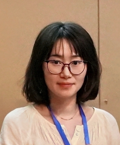

研究团队
杨洋 教授 电话 (微信)：17849991991 |
杨洋，南京信息工程大学环境科学与工程学院副院长，教授，博士生导师，国家海外引才计划青年学者，江苏省杰青，江苏省333人才工程第二层次人才，江苏特聘教授，江苏双创人才，斯坦福大学全球前2%顶尖科学家。本科毕业于南京信息工程大学，中国科学院大气物理研究所博士。曾在美国加州大学圣地亚哥分校和美国西北太平洋国家实验室工作多年。主要从事大气污染和气候变化等交叉领域的模式研究。先后主持国家重点研发青年科学家项目、国家重点研发专项课题、国家自然科学基金面上项目等，以第一和通讯作者发表SCI论文50余篇，包括多篇Nature子刊论文。获谢义炳青年气象科技奖、环境保护科学技术一等奖、江苏省高等学校科学技术研究成果奖。
 |
王品雅 副教授 性别：女 |
教育背景
2014-2019 南京大学大气科学学院 硕博连读（导师：汤剑平教授、方娟教授）
2018.9-2019.10 美国西北太平洋国家实验室(PNNL) 联合培养博士（合作导师：L. Ruby Leung 美国工程院院士）
2010-2014 南京大学大气科学学院 学士
工作经历
2019.12-今 南京信息工程大学 环境科学与工程学院